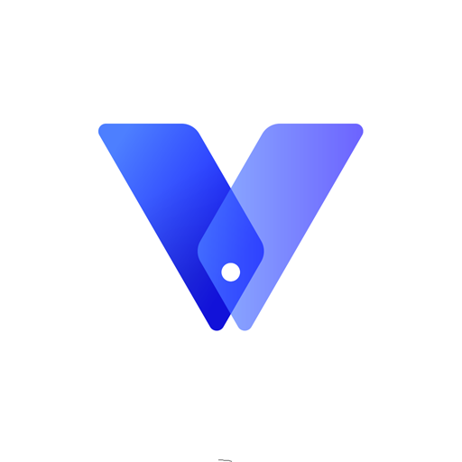

VPhoneOS
The best virtual machine for Android — rooted Android 12, 32-bit app support on 64-bit phones, Magisk without unlocking bootloader, and multi-instance.

What VPhoneOS is about
VPhoneOS is a cutting-edge Android emulator designed specifically for Android devices. Unlike older virtual machines that cap out at Android 7, VPhoneOS is the first to run a full Android 12 ROM — giving you a modern, rooted environment on your current phone without touching your main OS.
It creates a secure, independent virtual partition on your device, functioning like a second phone. You can run WhatsApp, ShareChat, Snapchat, and FreeFire side-by-side with your main apps, manage multiple accounts, and use it as a game booster — all without risking your personal data.
The feature that makes VPhoneOS stand out most is its cross-architecture compatibility. Newer Android phones are 64-bit only, which means classic 32-bit games like Flappy Bird, Dead Space, and Mass Effect: Infiltrator no longer run natively. VPhoneOS is the world's first solution to fully resolve this, enabling those apps to run seamlessly on pure 64-bit devices[citation:10].
What's inside VPhoneOS
- Android 12 ROM support — The first VM to run Android 12, plus Android 7 and 10 for older app compatibility[citation:1][citation:3].
- Magisk without bootloader unlock — Get full root access inside the VM without voiding your device warranty[citation:10].
- Run 32-bit apps on 64-bit phones — Play classic games that modern Android no longer supports[citation:2][citation:14].
- Google Play access — Perfect for Huawei and other devices without native Play Services[citation:8][citation:10].
- Multiple instances — Run more than one VM at the same time for testing, gaming, or multitasking[citation:10].
- Independent kernel architecture — Complete data isolation between the VM and your host device, keeping personal data safe[citation:10].
Why VPhoneOS beats F1 VM and other VMs
Both VPhoneOS and F1 VM are virtual machines for running GameGuardian and other root-only tools on unrooted phones. But VPhoneOS is the newer, more capable option. Here's the difference:
- Android version: F1 VM runs Android 7. VPhoneOS runs Android 12 (plus 7 and 10) — meaning better app compatibility and modern security patches[citation:1].
- 32-bit app support: F1 VM has limited 32-bit support. VPhoneOS specifically solves the 64-bit problem, letting you run classic games that F1 VM can't[citation:2].
- Magisk support: VPhoneOS lets you install Magisk without unlocking your bootloader — full root without losing warranty[citation:10].
- Multi-instance: VPhoneOS supports running multiple VMs simultaneously. F1 VM is single-instance[citation:10].
- Google Play: VPhoneOS has built-in Google Play Services access, making it easier to log into games[citation:8].
If you're currently using F1 VM for GameGuardian, VPhoneOS is a direct upgrade. Same purpose, better foundation.
Get the app
| Name | VPhoneOS |
|---|---|
| Version | 5.1.8 |
| Size | ~120 MB |
| Developer | Shenzhen Zhiduo Interactive Technology Co., Ltd. |
| Package | com.vphoneos.titan |
| Requires | Android 7.0+ |
| Category | Apps › game-tools |
| Price | Free |
Install instructions
- Download the APK using the button above — or install from Google Play for the auto-updating version.
- Ignore any redirects and pop-ups — use the back button to return to the download page.
- Enable Install from unknown sources in your device settings.
- Install and open VPhoneOS. Let it download the virtual system files on first launch.
- Inside the VM, install GameGuardian and the game you want to modify.
- Always launch GameGuardian before the game — VPhoneOS's root access is what makes the hacks work.